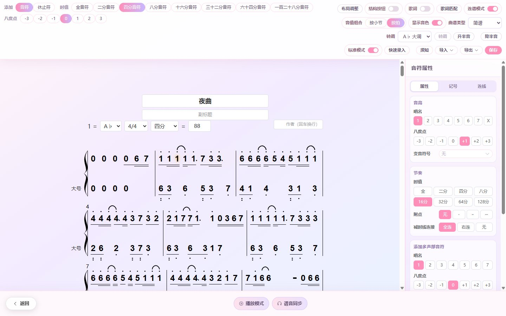
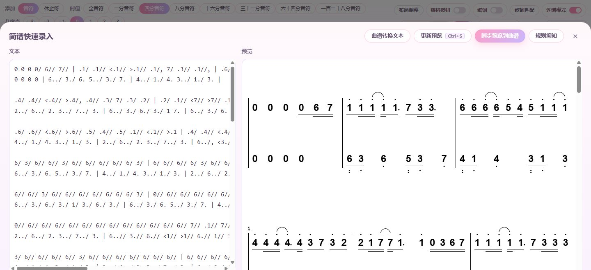
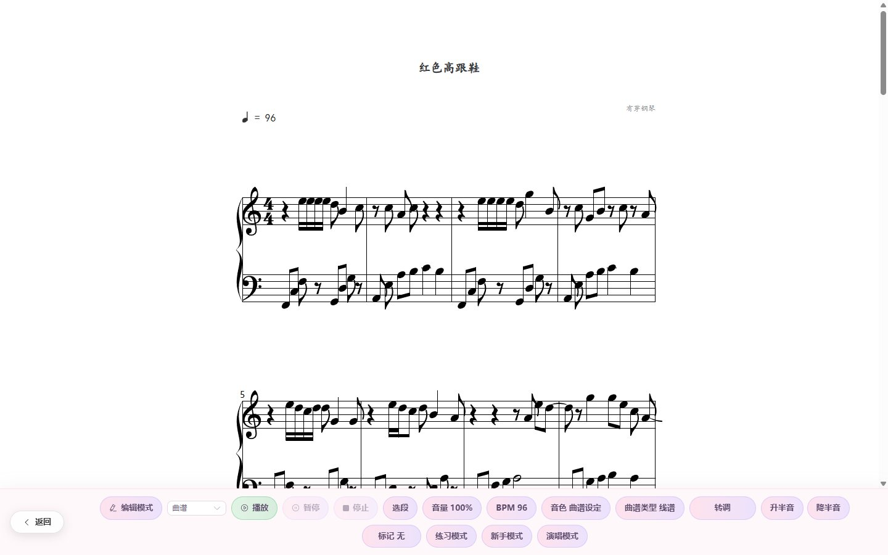
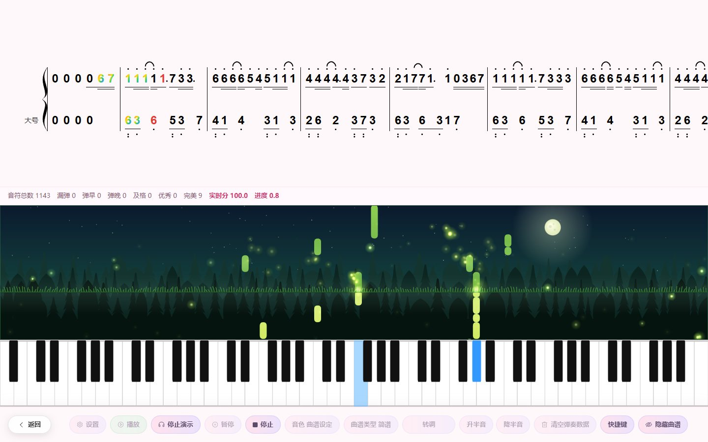

键盘直接打简谱
选中小节，按 1–7 输入 do re mi，字母三排对应高音、中音、低音，0 是休止符，时值用小键盘切换。
简谱编辑、五线谱编辑、简谱五线谱一键互转，图片转简谱，打完就能播放、配歌词、练钢琴。
加入 QQ 群，在群文件免费下载安装包
QQ 群 202732106
Windows 10 / 11 · 完全免费

专门为简谱设计的录入方式，不用拖鼠标点来点去，键盘敲数字就能把一首歌的简谱打完。

选中小节，按 1–7 输入 do re mi，字母三排对应高音、中音、低音，0 是休止符，时值用小键盘切换。
像写字一样用文本写简谱，右侧实时预览，一键同步成正式曲谱。
把简谱照片或截图拖进来，支持多张按顺序拼接，自动识别成可编辑的简谱。
按空格弹出节奏型卡片，二八、前十六、后十六、切分、附点一按就换好。
五线谱也能用键盘按唱名录入，接上 MIDI 键盘还能边弹边记谱。

鼠标点在哪就是哪个音；也可以键盘按唱名输入，自动按调号换算音高。谱号、调号、拍号、反复记号、反复房子都能设置。
插上 MIDI 键盘，按一个键记一个音，或者直接弹一段实时录成钢琴谱。
简谱转五线谱、五线谱转简谱一键切换，音高和节奏保持一致，还能整首转调。
导入 MIDI 自动生成五线谱，MusicXML 与其它打谱软件互通，也能导出 MIDI。
打好的谱子马上就能听、能唱、能练。

多种乐器音色播放，播放时音符跟着高亮；还能在每个音下面显示箫、笛子的指法图。
每个音下面写歌词，支持多段；整段歌词粘进来自动对齐到音符。演唱模式实时评测音准。
瀑布流 + 虚拟钢琴，连上 MIDI 钢琴自动判定弹得对不对，给出分数；新手模式一步一步跟着弹。
六线谱、四线谱、贝斯谱和架子鼓谱都能写，还有和弦图管理和电子鼓机。
绝对音感、节奏感、和弦识别、琴键音名小测验，边玩边练耳朵。
上课用的五线谱白板，点虚拟钢琴就能把音写上去，五度圈随手打开。
关于解熵简谱 / 五线谱软件
完全免费。加入 QQ 群 202732106，在群文件里下载安装包即可。
可以。曲谱类型一键切换，简谱转五线谱、五线谱转简谱都支持，音高与节奏保持一致。
可以。导入简谱图片（PNG / JPG / WebP / BMP，支持多张），软件自动识别生成可编辑的简谱。
目前支持 Windows 10 / Windows 11 电脑。
在 QQ 群 202732106 里直接提，新版本也会第一时间发在群文件。
加入 QQ 群 202732106，群文件里就是最新安装包。